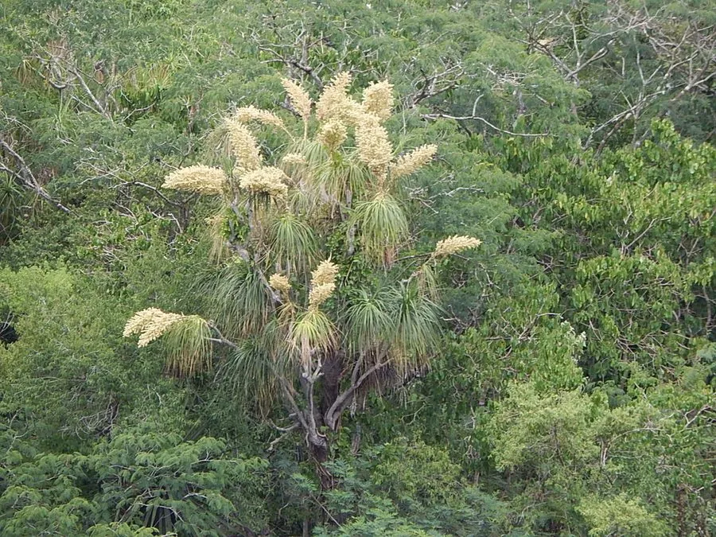

多肉植物 · 植物界
酒瓶兰 Beaucarnea recurvata

天门冬科酒瓶兰属多肉乔木，基部膨大如酒瓶，细长叶片下垂似马尾，原产墨西哥，是耐旱的室内观茎观叶植物。
- 分类
- 门被子植物门纲单子叶植物纲目天门冬目科天门冬科属酒瓶兰属
- 栖息环境
- 墨西哥东北部干旱地区的石质坡地与灌丛
- 地理分布
- 原产墨西哥东北部，世界各地盆栽观赏
- 保护级别
- 暂无评估
物种志
酒瓶兰为天门冬科酒瓶兰属的常绿多肉乔木，野生植株高可达 5–9 米，盆栽常控制在 1–2 米。茎干基部膨大呈球状或酒瓶状，树皮灰褐色、有龟裂，上部细长。叶片细长线形，长 1–2 米，簇生于茎顶，向外弯垂，形似马尾。花小，白色，圆锥花序，花期夏季，盆栽较少开花；果实为蒴果。
酒瓶兰原产墨西哥东北部的干旱地区，喜阳光充足、温暖干燥和通风良好的环境，耐旱、怕积水和低温。它基部膨大能储存水分，叶片细长下垂，株形奇特，是常见的室内观茎观叶植物。栽培用排水良好的沙质土，生长期干透浇透，冬季保持 10℃ 以上并控水；繁殖以播种和分株为主。
形态与习性
- 株高野生可达 5–9 米，盆栽 1–2 米
- 基部膨大如酒瓶，树皮龟裂
- 叶片细长线形，长 1–2 米，下垂
- 花期夏季，花小、白色
- 光照喜充足阳光
- 水分耐旱，干透浇透
- 土壤排水良好的沙质土
- 繁殖播种、分株
趣味知识
- 酒瓶兰基部膨大如酒瓶，能储存水分，耐旱力很强。
- 它的叶片细长下垂，像马尾一样，因此英文名意为马尾棕。
- 酒瓶兰原产墨西哥，喜干怕涝，浇水过多容易烂根。